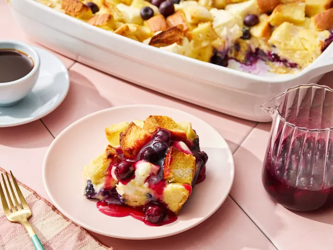

Home
overnight

Description
This blueberry French toast casserole is made the night before and baked in the morning for a very delicious holiday breakfast or brunch.
It's bursting with fresh blueberries,
and covered with a rich blueberry sauce to make it one-of-a-kind!
ingredients
- 12 slices day-old bread, cut into 1-inch cubes
- 2 (8 ounce) packages cream cheese, cut into 1-inch cubes
- 1 cup fresh blueberries
steps
- Gather all ingredients.
- Prepare casserole: Lightly grease a 9x13-inch baking dish.
Arrange 1/2 of the bread cubes in the dish and top with cream cheese cubes.
- Sprinkle blueberries over the cream cheese, then top with remaining bread cubes.